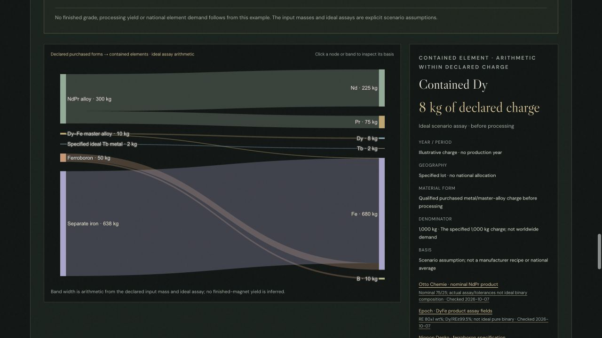

CRITICAL MATERIALS · MANUFACTURING · SCENARIO EXPLORATION
Rare-Earth Magnet Supply-Chain Explorer
An exploratory, evidence-linked tool connecting magnet raw materials, processing, manufacturing readiness, and U.S. end uses. Interactive maps and illustrative flow scenarios support questions about supply security, costs, and timing.
Published observations and estimates are distinguished from scenario assumptions. This work is a prototype, not a validated national forecast or a policy recommendation.